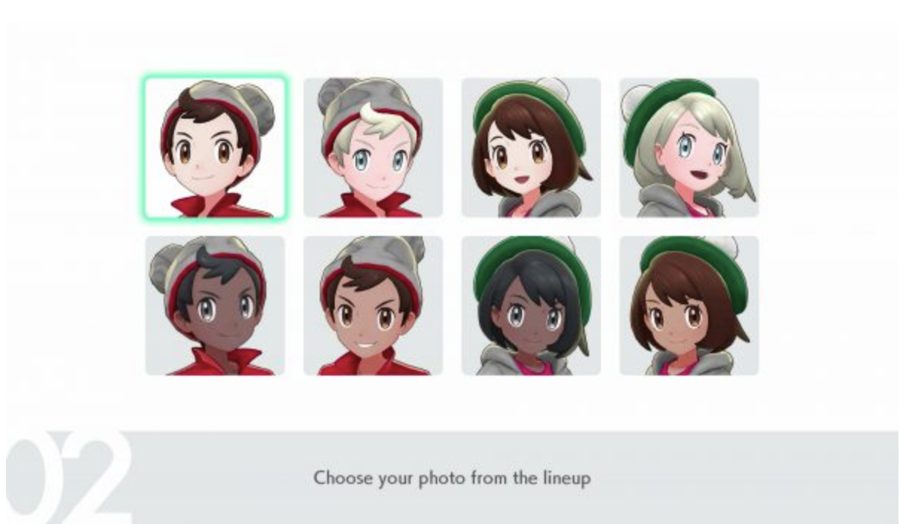

Home

People of the World of Pokemon!

Welcome to the world of Pokemon! In this world, Pokemon and people are friends and live in harmony. There are a few ways to live with Pokemon in the Pokemon world. In general, you can be
A Pokemon Trainer
A Pokemon Coordinator
A General Citizen, living with Pokemon

Pokemon Trainers travel the world, enter tournaments, and battle pokemon competitively - aiming to make other Pokemon Trainer’s Pokemon faint. Pokemon Coordinators showcase their Pokemon’s beauty through moves, breeding, and raising. These two kinds of people have Pokemon closely tied to their professions. Lastly, the Pokemon world has general citizens, like painters, bakers, doctors, professors, and nurses, who are also living peacefully with Pokemon. The Pokemon world has many diverse people, and with newer generations exploring areas like Unova (based on the United States), Kalos (based on France), Alola (based on Hawaii), and Galar (based on England), players have been able to see how different areas of the globe interface with Pokemon. Recently, the games have allowed the player to customize the look of their avatar, enabling the user to feel even more represented by the franchise. 


Please browse the site to learn more about the People in the World of Pokemon!
<link rel="icon" href = "images/pokeballfavicon.png">
